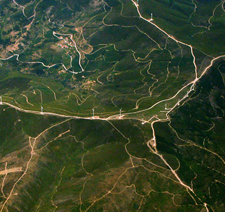
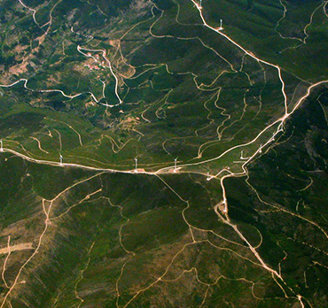

О храме
Храм (от праслав. *chormъ > храмъ — «дом»[1]) — культовое
сооружение, предназначенное для совершения богослужений
и религиозных обрядов. Значение храмов часто гораздо шире
обрядовых функций, ими выполняемых, и религиозных идей,
которые они воплощают. В символике архитектуры и
декоративного убранства храмов раскрываются
представления о мироздании, во многие эпохи (особенно в
Средние века в Европе) храмы были местом общественных собраний,
Новости
Новость 1
Храм (от праслав. *chormъ > храмъ — «дом»[1]) — культовое
сооружение, предназначенное для совершения богослужений
и религиозных обрядов. Значение храмов часто гораздо шире
Новость 2
Храм (от праслав. *chormъ > храмъ — «дом»[1]) — культовое
сооружение, предназначенное для совершения богослужений
и религиозных обрядов. Значение храмов часто гораздо шире
Новость 3
Храм (от праслав. *chormъ > храмъ — «дом»[1]) — культовое
сооружение, предназначенное для совершения богослужений
и религиозных обрядов. Значение храмов часто гораздо шире
Галерея
 
